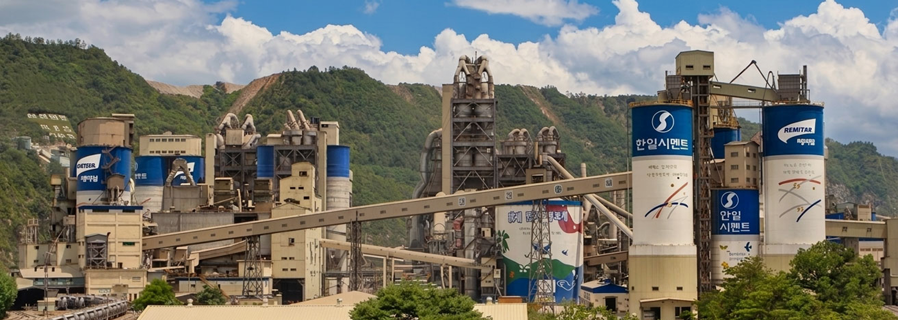
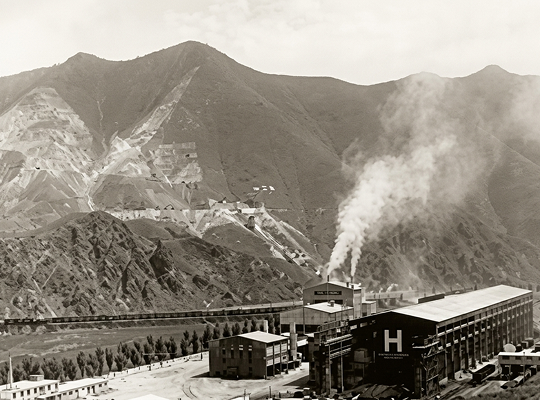
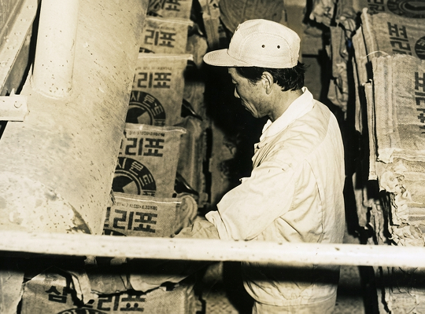
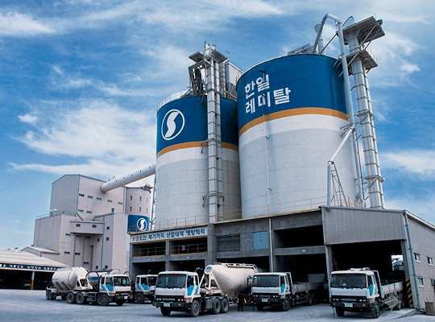
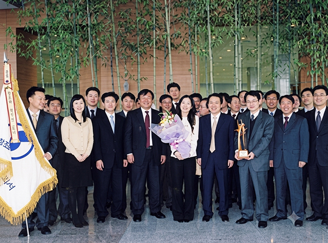
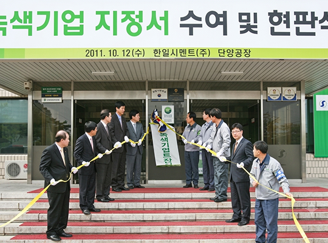
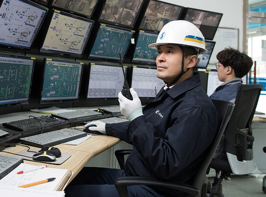

> 회사소개 > 회사연혁
Company history회사연혁
1961년 창립 이후 대한민국 건설의 기초를 다져온 한일시멘트 65년의 발자취입니다

1960s
창업과 기반 구축시멘트 제조를 시작하고 단양공장을 세우며 국내 건자재 산업의 토대를 다졌습니다.

- 1961 12월 회사 설립
- 1964 06월 단양공장 준공 (연간 40만톤) 주요 사건
- 1964 12월 시멘트 15,000톤 베트남 첫 수출
- 1969 08월 영등포공장 준공(시멘트 분쇄)
- 1969 11월 업계 최초 기업공개(주식 상장) 주요 사건
1970-80s
생산 확대와 복지 기반레미콘 사업에 진출하고 본사 사옥을 준공했으며, 업계 최초로 사내 근로복지기금을 조성했습니다.

- 1970 04월 업계 최초 벌크 트럭(BCT) 도입
- 1978 10월 조치원공장 준공 (레미콘)
- 1983 11월 우덕재단 설립 주요 사건
- 1985 10월 본사 사옥 준공 (지상 18층 지하 4층) 주요 사건
- 1988 11월 업계 최초 사내 근로복지기금 조성 주요 사건
1990s
레미탈의 탄생국내 최초의 드라이 몰탈 브랜드 레미탈을 출시하며 건자재 시장의 기준을 새로 세웠습니다.

- 1990 06월 단양공장 증설 (연산 450만톤)
- 1991 10월 국내 최초 드라이 몰탈 '한일 레미탈' 출시 주요 사건
- 1996 02월 제5회 경제정의 기업상 수상
- 1998 08월 업계 최초 가정용 레미탈 2.5kg 출시 주요 사건
- 1999 08월 고강도용 혼합재 '오메가 2000' 특허 획득
2000s
품질과 신뢰의 인정금탑산업훈장과 국가품질경영대회 대통령 표창을 받으며 품질 경영을 대외적으로 인정받았습니다.

- 2003 05월 제38회 발명의 날 금탑산업훈장 수상
- 2004 06월 한국에서 가장 존경받는 기업 첫 선정 주요 사건
- 2004 12월 ISO 9001/14001 전사업장 통합인증
- 2005 12월 제31회 국가품질경영대회 대통령 표창 주요 사건
- 2008 06월 테크니컬센터 개소
2010s
친환경 전환과 지배구조 개편폐열발전 설비를 가동해 친환경 생산체계를 갖추고, 지주회사 체제로 전환했습니다.

- 2011 06월 단양공장 폐열발전설비 가동
- 2011 12월 한일시멘트 창립 50주년 주요 사건
- 2016 03월 제5대 허기호 회장 취임 주요 사건
- 2017 07월 현대시멘트, 한일시멘트 종속회사로 편입
- 2018 07월 지주회사 한일홀딩스 출범 주요 사건
- 2019 07월 전근식 대표이사 취임 주요 사건
2020s
탄소중립을 향해저탄소 기술 개발과 근무제도 혁신을 이어가며 지속가능한 미래를 준비하고 있습니다.

- 2020 04월 본사 이전 (서울시 서초구 서초동 1587)
- 2021 08월 국내 최초 CO₂ 주입 바닥용 모르타르 FS150 개발 주요 사건
- 2024 04월 시멘트업계 최초 격주 주4일제 도입 주요 사건
- 2024 12월 역사관 'H STORY' 리모델링 개관
- 2026 02월 한국에서 가장 존경받는 기업 23년 연속 1위 주요 사건